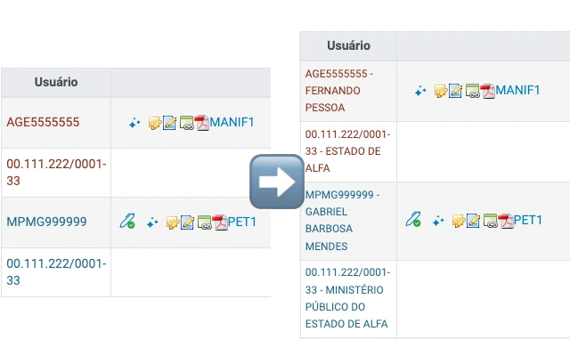
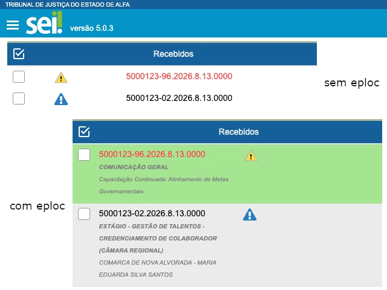

Veja o eploc trabalhando
Os atalhos certos, na hora certa Mini painel de ações contextuais.
Número de processo pela metade? Ele completa. Auto-completar no padrão CNJ.
E-mail sem redigitar destinatário Histórico, sugestões e limpeza automática de endereços.
Pensado para quem vive dentro do eproc
Funciona sozinho a partir da instalação. Cada melhoria pode ser ligada ou desligada no ícone da extensão.
Os dados do processo sempre à vista
Um painel que acompanha você pela página, com número, classe, partes, CPF, CNPJ e OAB a um clique de copiar. Arraste, redimensione, recolha.
Pesquise do jeito que você pensa
Digite um nome ou CPF/CNPJ na barra de cima. O eploc escolhe o formulário certo e faz a busca por você.
"Evento 12" vira link
Referências a eventos e documentos, nos eventos e nas minutas, viram links que levam direto ao lugar certo.
Saiba o que mudou nos relatórios
Marque processos para acompanhar e o eploc destaca o que mudou desde a última vez que você olhou.
Uma tabela de eventos que dá para ler
Eventos em sequência ou do mesmo documento viram uma linha só, e você destaca os termos que importam.
E-mails sem retrabalho
Destinatários sugeridos, modelos prontos e aviso quando você menciona um anexo e esquece de marcar.
Migrando do PJe? O eploc conhece o caminho.
A migração do TJMG deixou rastros: sigilo trocado, eventos fora de ordem, rótulos genéricos. O eploc arruma isso enquanto você trabalha.
- Aponta os documentos que ficaram com sigilo "Interno Nível 3", com atalho para cada um, e permite corrigir em bloco.
- Junta em uma linha os eventos do mesmo ID que a migração espalhou, com um marcador na posição original de cada um.
- Mostra a descrição real de cada evento no lugar de "PETIÇÃO" nas telas de vinculação de documentos.
- Abre o processo no eproc assim que a migração termina.
- Refaz sozinho a pesquisa que o eproc cancela após a troca de perfil.
- Organiza a tela de importação: regras de migração num menu expansível e um gráfico com o histórico de processos já migrados.
E mais dezenas de detalhes que somam horas no fim do mês
Organizados pelo que você está tentando fazer.
Encontrar mais rápido
- Número de processo pela metade? Ele completa. Números no padrão CNJ são reconhecidos e completados, com sufixo da comarca e ano detectados automaticamente.
- Prevenção sem abas inúteis. A busca roda em segundo plano e só abre uma aba quando encontra algo.
- O localizador certo com meia palavra. No campo "Novo localizador" das minutas, digite vários termos ao mesmo tempo (ex.: "concl emenda"): a busca aproximada aceita abreviações e pequenos erros de digitação e mostra primeiro os resultados mais relevantes.
- Listas longas que dá para filtrar. Listas de opções sem busca própria, como o tipo de parte, ganham um filtro por trechos em qualquer ordem, tolerante a abreviações e erros de digitação, e uma estrela para fixar as opções mais usadas no topo.
- A preferência certa sem rolar a lista. As listas de preferências do processo filtram enquanto você digita, com várias palavras em qualquer ordem. O filtro pode virar uma pasta que agrupa os itens encontrados e inclui automaticamente os novos.
- Localizadores excluídos voltam de uma vez. No histórico de localizadores, selecione os excluídos e reative todos: o editor da capa abre com eles já incluídos, para conferir e salvar.
- Localizadores secundários à vista. Os já selecionados aparecem como chips removíveis abaixo do campo.
Copiar e preencher sem redigitar
- Dados das partes sem selecionar texto. Copie CPF, CNPJ, número da OAB e outros dados do painel do processo com um clique.
- Número do processo com um clique. Nas tabelas de relatórios e da área de trabalho de minutas, um botão ao lado do número o copia, com ou sem pontuação.
- CPHA sem digitar campo por campo. No RUPE, cole os dados do advogado e o eploc reconhece e preenche os campos do cadastro de CPHA para você conferir.
- Lembrete com o texto já pronto. Selecione um trecho de um evento (ou passe o mouse sobre a descrição) para criar um lembrete rápido, já com o texto preenchido.
- Sigilo em bloco num passo só. Na alteração de sigilo em bloco, escolha o nível no cabeçalho da coluna e ele é aplicado a todos os documentos marcados.
- Login sem digitar a senha. O gerenciador de senhas do navegador passa a funcionar no login do eproc.
Não deixar nada passar
- Número errado não passa. Você é avisado na hora quando o dígito verificador de um número CNJ não confere.
- Anexo esquecido? Você fica sabendo. Ao enviar um e-mail que menciona anexo, o eploc avisa se nenhum documento foi marcado na tabela de anexos.
- Audiência sem registro não passa batido. A capa do processo mostra as audiências designadas com data futura, com link até o evento, e alerta para audiência já passada sem registro de realização.
- Alertas que não travam a tela — nem se perdem. Alertas do eproc que bloqueiam a navegação viram um banner flutuante, sem impedir o clique em outros elementos. Os dos últimos 7 dias ficam num histórico, com contador na barra superior para os que fecharam sem serem lidos.
- Lembretes em lote. Selecione vários lembretes do processo e desative-os de uma vez, com opção de alinhar o texto deles à esquerda.
Minutas e e-mails
- Confira a minuta sem rolar a tela. Ao editar uma minuta, um painel flutuante lista localizadores, intimação/citação, destinatário, remessa, audiência e assinante.
- Da minuta à árvore de documentos. O item "Árvore" no menu flutuante da minuta abre a árvore de documentos em nova aba, e menções a "Evento N" no texto viram links que já abrem o evento/documento destacado.
- Cole um texto, ganhe os destinatários. Destinatários viram chips removíveis, com autocompleção, sugestão de contatos frequentes e colagem que já extrai os e-mails de um texto.
- Respostas prontas. Modelos de mensagem para responder rápido por e-mail, com um modelo padrão.
- "Manter Agendamento" sem clicar. Se você preferir ativar, o eploc clica na opção da minuta sozinho (opcional).
O eproc do seu jeito
- Cada aba com sua cor. Personalize a cor do eproc (favicon, logos e animação de carregamento) para diferenciar as abas.
- Seu perfil, já escolhido. Marque um perfil com uma estrela na tela de login e ele passa a ser selecionado automaticamente nas próximas entradas.
- Painéis que não resetam. Os painéis de Preferências do processo (Minutas, Movimentação, Intimação, Automatizações) e as caixas "Manter Aberto" voltam ao estado que você deixou quando o eproc os reseta sozinho.
- Colunas do jeito que você deixou. As colunas visíveis do Relatório Geral também são memorizadas e restauradas.
- Painel do Servidor organizado. Seções podem ser recolhidas ou fixadas com destaque (cores configuráveis) e reordenadas por setas — tudo lembrado separadamente por perfil/unidade.
- Vários monitores sem rearrumar. O eploc memoriza a quantidade de monitores e a posição da janela de documentos e as restaura quando o eproc as perde, com atalho no menu do usuário para restaurar na hora.
- O nome do perfil inteiro. O seletor de perfil na barra superior se ajusta ao nome selecionado, sem cortar, com opção de simplificar nomes de perfil (remove "USUÁRIO" repetido).
- Dica fechada fica fechada. As dicas nativas do eproc já fechadas não reaparecem, e o botão de ajuda ("?") reúne todas elas num painel, agrupadas por assunto.
- Clique no texto, não só na caixinha. Caixas de seleção como "Manter Minutas Aberto" e "Exibir Excluídas/Anuladas" marcam e desmarcam também pelo texto.
- Tabelas sem faixa cinza. Opção para desligar o destaque que o eproc aplica à linha sob o mouse nas tabelas dos relatórios.
SEI, RUPE e TJMG
- Urgências em destaque no SEI. A listagem de processos pode destacar itens por termos configuráveis (ex.: "urgente", "prioridade").
- Os critérios da certidão à vista. O espelho de pesquisa no RUPE mantém visíveis os critérios usados na emissão de uma certidão positiva/negativa.
- Dativos numa lista só. A consulta de advogados dativos no RUPE (TJMG) ganha busca nos filtros e unifica todos os resultados paginados em uma única lista.
- Login do Meu Gabinete inteiro. O quadro de login do Meu Gabinete (TJMG) ganha altura suficiente para exibir todo o formulário de acesso.
- O símbolo do TJMG no menu. O link para o portal do TJMG no menu superior mostra o símbolo do tribunal no lugar da sigla "MG" ou "TJMG".
Backup e configurações
- Suas configurações em qualquer computador. Desativado por padrão: se você conectar sua conta Google, suas configurações e dados ficam na pasta privada do seu próprio Google Drive, com até 20 versões e sincronização contínua entre dispositivos.
- Nada some do backup. O backup no Google Drive pode varrer todo o histórico salvo para recuperar contatos, modelos e outros dados que tenham desaparecido do backup atual.
- Compartilhe só o que quiser. Exporte só as bases que escolher (e-mails, modelos de mensagem, destaques, processos monitorados) num arquivo JSON para outra pessoa.
- Ache a funcionalidade pelo nome. O popup da extensão tem busca instantânea entre as funcionalidades da página atual, filtrando por nome ou descrição.
- Veja antes de ligar. Na página de configurações, os cards das funcionalidades com vídeo de demonstração mostram o vídeo ao passar o mouse.
Cada recurso, em vídeo
Demonstrações curtas de funcionalidades do eploc. Novos vídeos entram aos poucos.
Do dia a dia forense, em detalhes
Consulta rápida sem sair da tela Painel lateral fixo.
Suas ações mais usadas primeiro Ações favoritas no eproc.

Saiba quem fez cada ato Nomes dos usuários por extenso nos eventos.

Um SEI mais fácil de ler Visualização horizontal e mais descritiva.
Seus processos não saem do seu computador.
O eploc não tem servidor. Ele roda inteiro dentro do seu navegador, e nenhum dado de processo, senha ou informação pessoal é enviado a ninguém — nem ao desenvolvedor.
Quer usar em mais de um computador? Ative o backup opcional: suas configurações vão para uma pasta privada no seu Google Drive, que só você acessa. Desligado por padrão.
Feito por quem vive dentro do eproc
Sou servidor do TJMG há 18 anos, em Espera Feliz/MG, e desde 2023 faço parte da equipe da extensão PJe+R, do CNJ. Agora que estamos todos no mesmo barco do eproc, juntei essa experiência para trazer as funcionalidades de que eu mesmo sentia falta no dia a dia. O eploc, porém, é um projeto pessoal, sem relação com o meu trabalho voluntário no CNJ.
Sou o usuário número 1 do eploc: tem coisa que só aparece depois de horas encarando o sistema. Encontrou um problema ou tem uma ideia? Entre no grupo do WhatsApp ou escreva pelo formulário — leio todas as mensagens.
— Fellippe Heitor
Pronto para usar em segundos
- Instale o eploc na Chrome Web Store (funciona no Chrome e no Edge).
- Abra o eproc, SEI ou RUPE — o eploc já começa a funcionar sozinho.
- Clique no ícone da extensão para ativar ou desativar cada melhoria.
Perguntas frequentes
O Chrome diz que o eploc pode "ler e alterar todos os seus dados em todos os sites". Por quê?
É um texto genérico do navegador. O eploc só atua no eproc, SEI, RUPE e páginas do TJMG. Como cada tribunal tem seu próprio endereço dentro de jus.br, o Chrome resume a lista nessa frase. Depois de algumas atualizações, pode ser preciso clicar em "Reativar".
É oficial do TJMG?
Não. O eploc é independente e não tem vínculo com o TJMG, o CNJ ou qualquer tribunal. Ele só melhora a tela — os atos continuam sendo seus e devem ser conferidos como sempre.
Funciona no Edge?
Sim. Instale pela mesma página da Chrome Web Store.
Quanto custa?
O eploc é gratuito.
Posso desligar o que não uso?
Sim. Cada melhoria liga e desliga pelo ícone da extensão.
Encontrei um erro. O que faço?
Use o formulário Fale com o eploc ou avise no grupo do WhatsApp.
Seu próximo processo já pode ser mais rápido.
Instalar o eploc grátisChrome e Edge · 100% local · Sem cadastro